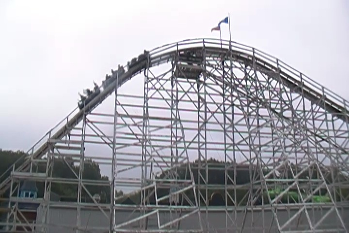

| |
Wildcat Review

We're here at Lake Compounce and todays ride we'll be reviewing is Wildcat. Once you get in the cars and pull down the buzz bars and buckle the seatbelt, you're on your way. We roll out of the station and up the lifthill. It's not very big or very fast considering that this is an old ride. But let's give this ride a fair chance. It could potentially really thrill us and be a hidden gem, even with a Top 10 Wooden Coaster, Boulderdash, right in the same park. We reach the top of the lifthill and get a nice view of Lake Compounce. However, we reach the top and head down the first drop. It's fun for a split second. Until we reach the bottom. And then it starts to jackhammer. Seriously, was this ride made out of broken nails or what!!? We then rise up to a turnaround hill. We brace for painful laterals, but surprisingly, there's no pain. That's the good news. The bad news, there's no force either or fun laterals. We make it around the turn and head back down. It's not really much of a drop as much as a downward peice of straight track. Seriously, it barely feels like we're accelerating until...SHAKE SHAKE SHAKE!!! More jackhammering. God Dammit!!! We head up into a small hill. Here, the jackhammering continues and we also get a nice SLAM to the side. Not a fun peice of laterals, but one you gotta brace for. The jackhammering begins to die down as we head into an airtime hill. Only without the airtime. We then head up into another one of those turnaround hills. This one has some more laterals than the first one, but it also has more jackhammering. The jackhammering isn't really painful, but it's certainly annoying, and not something I wanna deal with. Now the turnaround goes a little more than just a 180 degree turn so we drop down, towards the structure. We then head into three bunny hops. All with laterals as we're also turning. All with unpleasent jackhammering. And all without airtime. We head around a flat turn to get back around before heading into another (non) airtime hill. Hell, it's not even that fast. It's just boring. Well, at least it's not rough anymore. We go through another rough airtime hill, only with no airtime, and a little bit of mild jackhammering. God Dammit!!! Just finish already!!! Well, I got my wish. We rise up into the brake run and curve right into the station. Yeah. Wildcat is a terrible wooden coaster. Not only is it seriously ignored due to the fact that it's next door neighbor is one of the best coasters in the world, even if we take out that factor, this coaster still sucks. It has a poor pace, not very many forces, and a lot of shaking that leads to an uncomfortable ride. I'd only ride it once for credit whoring and then ignore it.
4/10
Location: Lake Compounce
Opened: 1927
Built by: Charlie Dinn
Last Ridden: July 29, 2011
Wildcat Photos

|